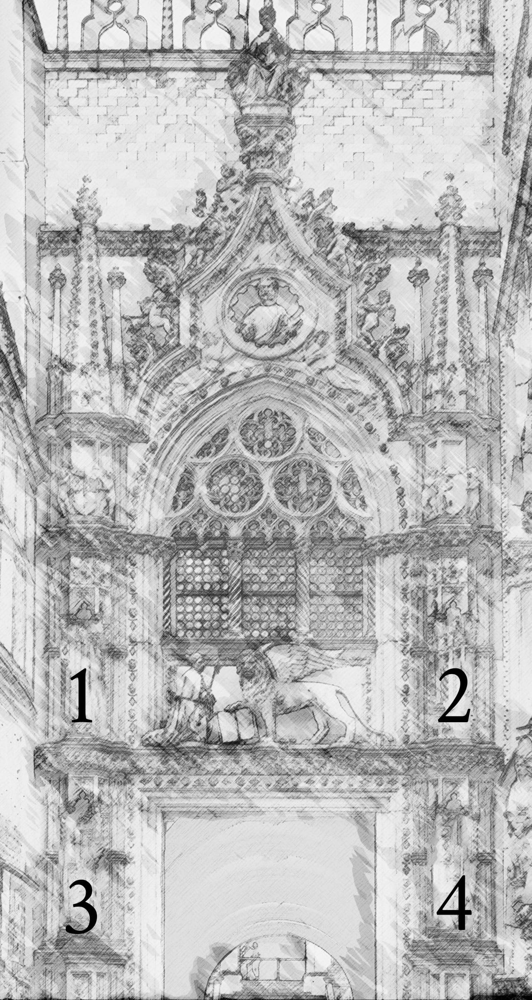
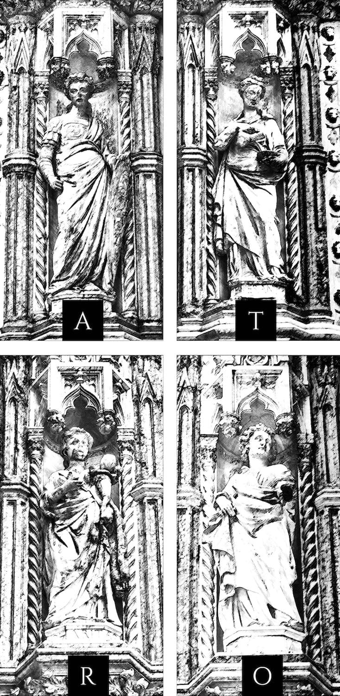

GRANDE!
La chiave inserita ha decriptato il prossimo indizio.

“Questa porta, che guida alla corte del Palazzo Ducale, e che venne eretta da Bartolomeo Buono, prese il nome dagli annunzi che vi si affiggevano sopra, o dai balotini, che, lungo il portico, fra essa e la Scala dei Giganti, mettevano in carta, cioè trascrivevano, gli squittini del Maggior Consiglio e del Senato.
Essi servivano anche al popolo illetterato, mediante il ministero della penna.
Quest’ultimo uffizio dopo la caduta della Repubblica, venne assunto da alcuni altri uomini, i quali piantarono i loro scrittoj sotto il portico a destra di chi entra dalla Piazzetta nella corte.
Ancora nella prima metà del secolo presente si vedevano, ridotti ad uno o due prestar l’orecchio alle domande, e , verso una tenue mercede, stendere suppliche, istanze ed anche lettere colle quali qualche volta servotta corrispondeva all’infuocate proteste del suo damo.”


In quale ordine appaiono le quattro statue nell'immagine?La chiave inserita ha decriptato il prossimo indizio.
La chiave inserita non è corretta...